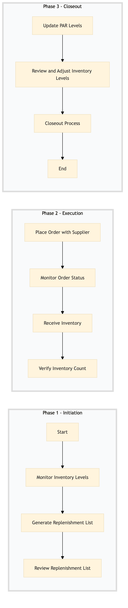

| Role | Steps |
|---|---|
| Executive Housekeeper | 1.1 1.2 1.3 3.2 |
| Procurement Manager | 2.1 2.2 |
| Inventory Manager | 2.3 2.4 3.1 3.3 |
| Step | Name | Role | System | Input | Output | KPI | Dec? | Exc? | Pain Point / Risk |
|---|---|---|---|---|---|---|---|---|---|
| 1.1 | Monitor Inventory Levels | Executive Housekeeper | Oracle OPERA Cloud | Inventory report from Oracle OPERA Cloud | Low stock alert list | Less than 5 minutes to identify low stock items | N | Y | Manual tracking of inventory levels can lead to discrepancies. |
| 1.2 | Generate Replenishment List | Executive Housekeeper | Oracle OPERA Cloud | Low stock alert list | Replenishment order form | Less than 3 minutes to generate the list | N | Y | Incorrect item selection can lead to overstocking or understocking. |
| 1.3 | Review Replenishment List | Executive Housekeeper | Oracle OPERA Cloud | Replenishment order form | Approved replenishment list | Less than 2 minutes to review and approve | Y | N | No clear guidelines for approval process. |
| 2.1 | Place Order with Supplier | Procurement Manager | Birchstreet Procurement | Approved replenishment list | Purchase order confirmation | Less than 5 minutes to place the order | N | Y | Supplier communication delays can cause stockouts. |
| 2.2 | Monitor Order Status | Procurement Manager | Birchstreet Procurement | Purchase order confirmation | Order status update | Less than 1 minute to check the status | N | Y | Delayed updates from suppliers can disrupt inventory management. |
| 2.3 | Receive Inventory | Inventory Manager | Oracle OPERA Cloud | Delivered goods | Stock update in Oracle OPERA Cloud | Less than 10 minutes to receive and record inventory | N | Y | Manual data entry can lead to errors. |
| 2.4 | Verify Inventory Count | Inventory Manager | Oracle OPERA Cloud | Stock update in Oracle OPERA Cloud | Inventory count verification report | Less than 5 minutes to verify the count | Y | N | No clear process for inventory verification. |
| 3.1 | Update PAR Levels | Revenue Manager | Oracle OPERA Cloud | Inventory count verification report | Updated PAR levels in Oracle OPERA Cloud | Less than 3 minutes to update PAR levels | N | Y | Incorrect PAR levels can lead to overstocking or understocking. |
| 3.2 | Review and Adjust Inventory Levels | Executive Housekeeper | Oracle OPERA Cloud | Updated PAR levels in Oracle OPERA Cloud | Final inventory adjustment report | Less than 2 minutes to review and adjust | Y | N | No clear guidelines for final adjustments. |
| 3.3 | Closeout Process | Inventory Manager | Oracle OPERA Cloud | Final inventory adjustment report | Closed out process record | Less than 1 minute to close the process | N | Y | No clear documentation for closure. |
This process ensures that inventory levels are maintained at optimal levels to meet guest needs and operational efficiency in a full-service Marriott hotel.